3 可視化1
棒グラフ・ヒストグラム
今日の目標
ggplot2の基本的な考え方（レイヤー構造）を理解する。
- 棒グラフ（
geom_bar()/geom_col()）を描けるようになる。
- ヒストグラム（
geom_histogram()）を描けるようになる。
3.1 パッケージの準備
今回使用するパッケージを読み込みます。 tidyverse には ggplot2 と dplyr がどちらも含まれているので、 これ 1 行で前回の道具もすべて使えます。
tidyverse に含まれる主なパッケージ
| パッケージ | 役割 |
|---|---|
ggplot2 |
グラフ作成 |
dplyr |
データ操作（前回学習済み） |
readr |
CSV 読み込み |
tidyr |
データ整形 |
stringr |
文字列処理 |
今回から ggplot2 を本格的に使っていきます。
3.2 ggplot2 の基礎
ggplot2 とは
ggplot2 は、Hadley Wickham が開発した R のグラフ作成パッケージです。 「Grammar of Graphics（グラフィックスの文法）」 という考え方に基づいており、 グラフを「部品の組み合わせ」として構築します。
R でグラフを描く主な方法を比較すると次のとおりです。
| 方法 | 関数の例 | 特徴 |
|---|---|---|
| Base R | plot(), hist(), barplot() |
R 標準搭載。手軽だが細かい調整が難しい |
| ggplot2 | ggplot() + geom_*() |
レイヤーを重ねる。美しく・柔軟・再現しやすい |
この講義では ggplot2 を一貫して使います。
レイヤー構造
ggplot2 の最大の特徴は、グラフを レイヤー（層） として積み重ねる点です。
ggplot(data = データ, aes(x = X軸変数, y = Y軸変数)) # キャンバスの準備
+ geom_bar() # 棒グラフのレイヤー
+ labs(title = "...") # タイトルのレイヤー
+ theme_minimal() # テーマのレイヤー+ でどんどんレイヤーを足していくイメージです。 レゴブロックを積み上げるように、後から何でも追加・変更できます。
覚えるべき基本の 3 点セット
ggplot(data = データ, aes(...))： キャンバスを用意する。データにはグラフを描くデータを入れる、aes()に変数を入れる。
geom_*()─： 図形を描く。geom_bar(),geom_histogram()などgeom は Geometric object（ジオメトリック・オブジェクト） の略です。
日本語に直すと 「幾何学的オブジェクト」 となります。
グラフを描くとき、データ（点や数値）そのものはただの数字の集まりですが、それを「点」で見せるのか、「棒」で見せるのか、「線」で見せるのかという 「図形的な形」 を指定するのが geom_* の役割です+─： レイヤーをつなぐ演算子。|>パイプとは別物！
aes()の主な引数
aes() の中で、変数とグラフの見た目を対応させます（= マッピング）。
aes は Aesthetics（エステティクス）の略です。日本語に訳すと「美学」や「美意識」といった意味になりますが、データ分析の文脈（特に ggplot2 パッケージ）では「視覚的属性」と理解するのが一番しっくりきます。
| 引数 | 役割 | 例 |
|---|---|---|
x |
X 軸に使う変数 | x = class |
y |
Y 軸に使う変数 | y = hwy |
fill |
塗りつぶしの色に使う変数（棒・箱など） | fill = drv |
color |
輪郭線の色に使う変数 | color = class |
size |
点や線の大きさ | size = displ |
fill と color の違い
棒グラフのような「面積」を持つ図形では、 fill（塗りつぶし）と color（輪郭）は別々に設定できます。 点・線だけの図形（散布図など）では主に color を使います。
3.3 今回使うデータ
mpg データ
ggplot2 に付属している自動車の燃費データです。234 行 × 11 列で、各行が 1 車種を表します。
Rows: 234
Columns: 11
$ manufacturer <chr> "audi", "audi", "audi", "audi", "audi", "audi", "audi", "…
$ model <chr> "a4", "a4", "a4", "a4", "a4", "a4", "a4", "a4 quattro", "…
$ displ <dbl> 1.8, 1.8, 2.0, 2.0, 2.8, 2.8, 3.1, 1.8, 1.8, 2.0, 2.0, 2.…
$ year <int> 1999, 1999, 2008, 2008, 1999, 1999, 2008, 1999, 1999, 200…
$ cyl <int> 4, 4, 4, 4, 6, 6, 6, 4, 4, 4, 4, 6, 6, 6, 6, 6, 6, 8, 8, …
$ trans <chr> "auto(l5)", "manual(m5)", "manual(m6)", "auto(av)", "auto…
$ drv <chr> "f", "f", "f", "f", "f", "f", "f", "4", "4", "4", "4", "4…
$ cty <int> 18, 21, 20, 21, 16, 18, 18, 18, 16, 20, 19, 15, 17, 17, 1…
$ hwy <int> 29, 29, 31, 30, 26, 26, 27, 26, 25, 28, 27, 25, 25, 25, 2…
$ fl <chr> "p", "p", "p", "p", "p", "p", "p", "p", "p", "p", "p", "p…
$ class <chr> "compact", "compact", "compact", "compact", "compact", "c…棒グラフで使う主な変数：
| 変数名 | 内容 | 型 |
|---|---|---|
manufacturer |
メーカー名 | 文字列（離散） |
class |
車の種類（SUV, compact, …） | 文字列（離散） |
drv |
駆動方式（f=前輪, r=後輪, 4=4WD） | 文字列（離散） |
cyl |
シリンダー数（4, 6, 8, …） | 数値（離散） |
hwy |
高速道路燃費（miles/gallon） | 数値（連続） |
displ |
エンジン排気量（リットル） | 数値（連続） |
diamonds データ
ggplot2 に付属しているダイヤモンド価格データです。 53940 行 × 10 列の大規模データセットです。
Rows: 53,940
Columns: 10
$ carat <dbl> 0.23, 0.21, 0.23, 0.29, 0.31, 0.24, 0.24, 0.26, 0.22, 0.23, 0.…
$ cut <ord> Ideal, Premium, Good, Premium, Good, Very Good, Very Good, Ver…
$ color <ord> E, E, E, I, J, J, I, H, E, H, J, J, F, J, E, E, I, J, J, J, I,…
$ clarity <ord> SI2, SI1, VS1, VS2, SI2, VVS2, VVS1, SI1, VS2, VS1, SI1, VS1, …
$ depth <dbl> 61.5, 59.8, 56.9, 62.4, 63.3, 62.8, 62.3, 61.9, 65.1, 59.4, 64…
$ table <dbl> 55, 61, 65, 58, 58, 57, 57, 55, 61, 61, 55, 56, 61, 54, 62, 58…
$ price <int> 326, 326, 327, 334, 335, 336, 336, 337, 337, 338, 339, 340, 34…
$ x <dbl> 3.95, 3.89, 4.05, 4.20, 4.34, 3.94, 3.95, 4.07, 3.87, 4.00, 4.…
$ y <dbl> 3.98, 3.84, 4.07, 4.23, 4.35, 3.96, 3.98, 4.11, 3.78, 4.05, 4.…
$ z <dbl> 2.43, 2.31, 2.31, 2.63, 2.75, 2.48, 2.47, 2.53, 2.49, 2.39, 2.…ヒストグラムで使う主な変数：
| 変数名 | 内容 | 型 |
|---|---|---|
price |
価格（米ドル） | 数値（連続） |
carat |
重さ（カラット） | 数値（連続） |
cut |
カットの品質（Fair〜Ideal） | 順序因子（離散） |
color |
色のグレード（D〜J） | 順序因子（離散） |
clarity |
透明度（I1〜IF） | 順序因子（離散） |
3.4 棒グラフ
棒グラフとヒストグラムの違い
見た目はよく似ていますが、用途がまったく異なります。
| 棒グラフ（Bar chart） | ヒストグラム（Histogram） | |
|---|---|---|
| 対象変数 | 離散変数（カテゴリ・整数） | 連続変数（実数） |
| 棒と棒の間 | 隙間がある | 隙間なし |
| 関数 | geom_bar() / geom_col() |
geom_histogram() |
| 例 | 車のクラス別台数 | ダイヤモンドの価格分布 |
離散変数 vs 連続変数
- 離散変数：「compact」「SUV」や「4」「6」のように、決まった値しかとらない変数
- 連続変数：「15,432 ドル」のように、理論的にどんな値もとりうる変数
棒グラフは「カテゴリごとの個数・合計」を示すのに最適です。
geom_bar() の基本
geom_bar() は、指定した変数の値の個数を自動で数えて棒グラフにします。 y は指定不要です。
aes(x = class) と書くだけで、種類ごとの行数（台数）を数えて棒にしてくれます。
geom_bar() の stat（統計変換）
geom_bar() はデフォルトで stat = "count" が設定されており、 自動的に個数を数えます。このため y の指定が不要です。
すでに「個数」「合計」などの値がデータにある場合は、 後述の geom_col() を使います。
色を変える
fill で塗りつぶしの色を変える
- 1
-
aes()の外に書くと、全棒を同じ色にする
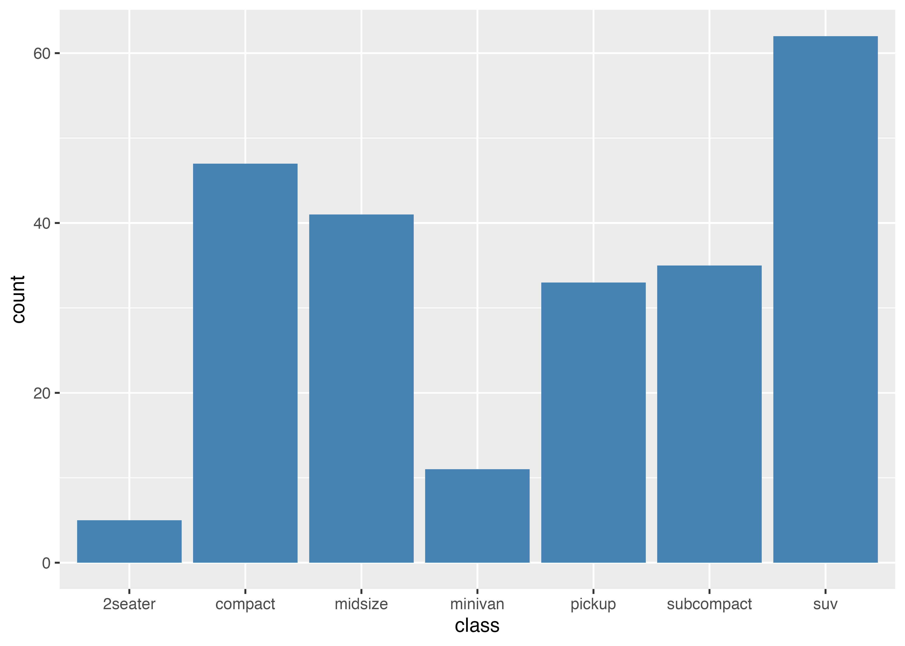
- 1
-
aes()の中にfill = 変数を書くと、カテゴリごとに色が変わる
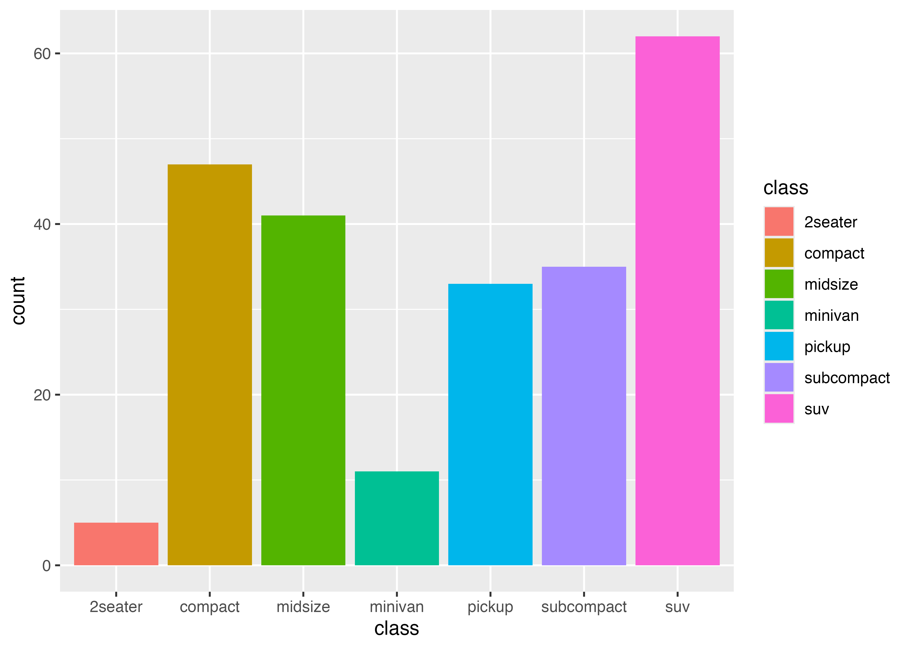
color（輪郭色）と組み合わせる
- 1
-
colorが輪郭の色、linewidthが輪郭の太さ
軸ラベル・タイトルを追加する
labs() レイヤーでタイトルや軸ラベルを設定します。
- 1
- グラフのタイトル
- 2
- X 軸のラベル
- 3
- Y 軸のラベル
- 4
- キャプション（右下に表示）
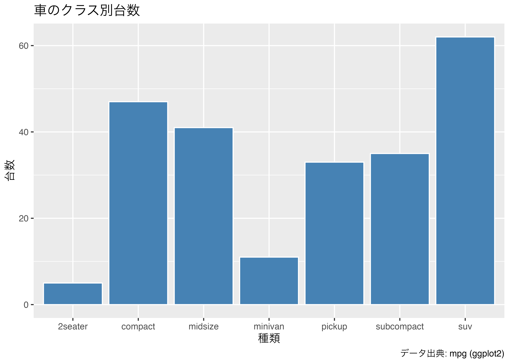
棒を並べ替える
デフォルトでは棒がアルファベット順に並びます。 個数が多い順に並べると読みやすくなります。
fct_infreq() で頻度順に並べる
- 1
-
fct_infreq()で因子の順序を頻度の多い順に変換する（forcatsパッケージの関数）
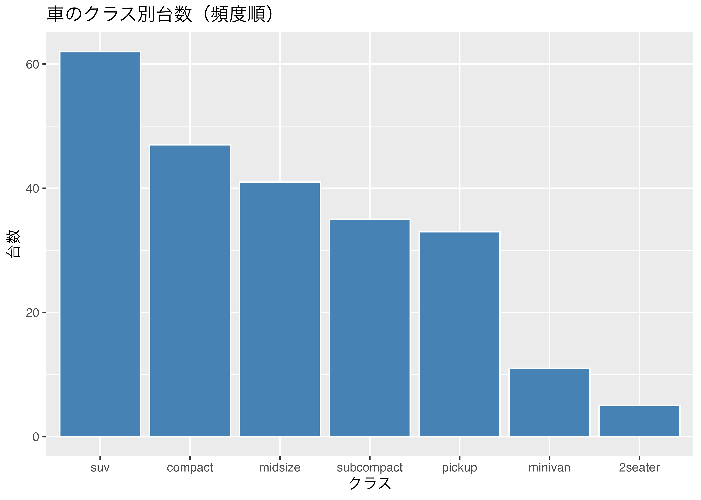
forcats パッケージ
因子（カテゴリ変数）の順序を操作するためのパッケージです。 tidyverse に含まれているので、別途インストール不要です。
| 関数 | 効果 |
|---|---|
fct_infreq() |
頻度の多い順 |
fct_rev() |
逆順 |
fct_reorder(変数, 値) |
値の大きさで並べ替え |
横向き棒グラフ
カテゴリ名が長い場合、横向き（水平）にすると読みやすいです。
- 1
- メーカー名は長いので横向きにすると読みやすい
- 2
-
coord_flip()で X 軸と Y 軸を入れ替える
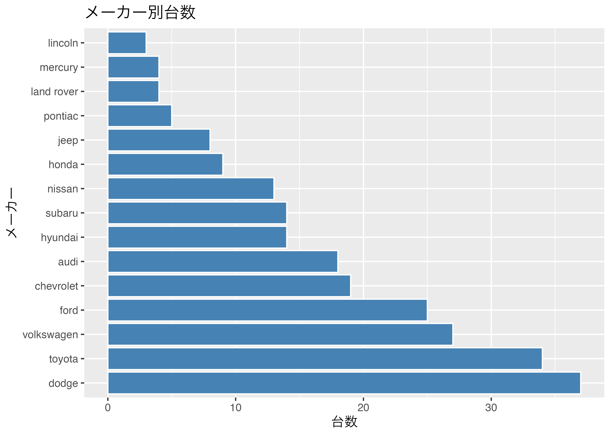
グループ別の棒グラフ
fill に別の変数を指定すると、グループ別の棒グラフになります。
積み上げ棒グラフ（デフォルト）
- 1
-
fill = drvで駆動方式ごとに色分け - 2
-
labs()のfillで凡例のタイトルを設定
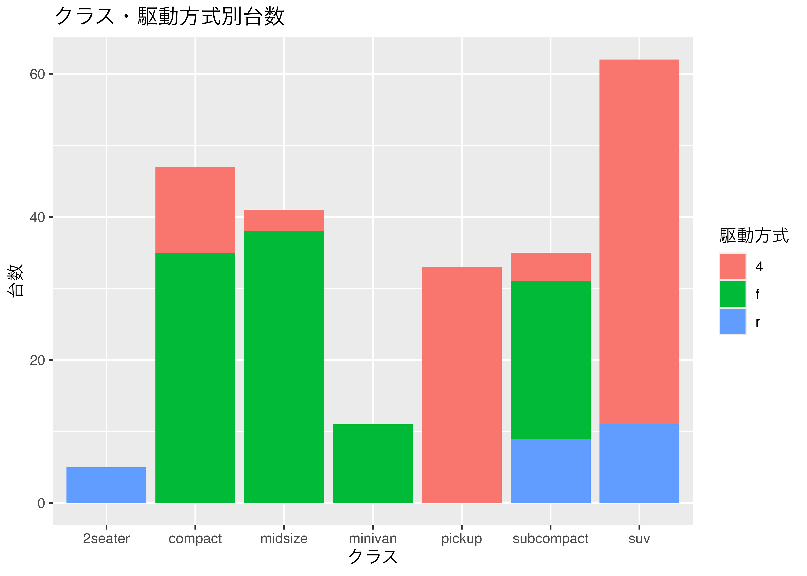
並列棒グラフ（position = "dodge"）
- 1
-
position = "dodge"で横に並べる（デフォルトは"stack"）
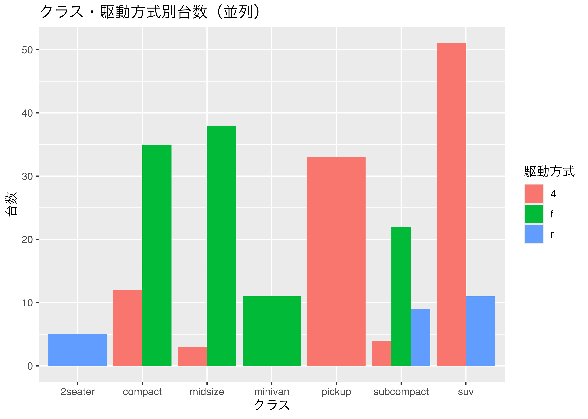
割合の積み上げ棒グラフ（position = "fill"）
- 1
-
position = "fill"で各棒を 100% に正規化 - 2
- Y 軸をパーセント表示に変換
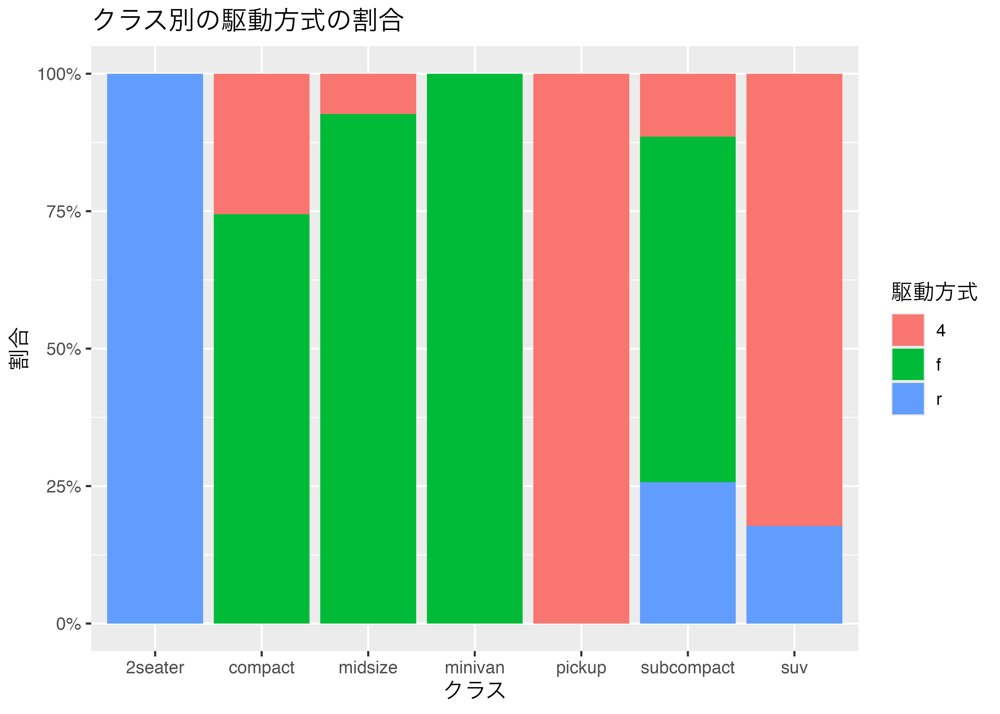
position 引数まとめ
| 値 | 効果 |
|---|---|
"stack" |
積み上げ（デフォルト） |
"dodge" |
横に並列 |
"fill" |
割合に正規化 |
geom_col() 値を直接指定する
geom_bar() はデータの個数を自動で数えますが、 データにすでに集計値がある場合は geom_col() を使います。
# まず dplyr でデータを集計する
mpg_avg <- mpg |>
group_by(manufacturer) |>
summarise(avg_hwy = mean(hwy)) |>
arrange(desc(avg_hwy))
# geom_col() で棒グラフを描く
ggplot(data = mpg_avg, aes(x = reorder(manufacturer, avg_hwy), y = avg_hwy)) +
geom_col(fill = "steelblue", color = "white") +
coord_flip() +
labs(
title = "メーカー別の平均高速道路燃費",
x = "メーカー",
y = "平均燃費 (mpg)"
)- 1
- 降順に並べ替えて集計
- 2
-
reorder(manufacturer, avg_hwy)で燃費順にメーカーを並べる
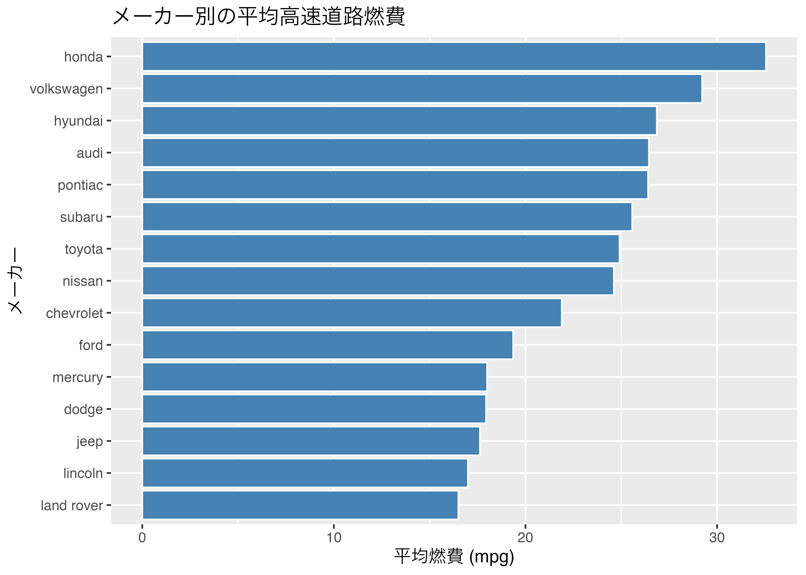
geom_bar() vs geom_col() の使い分け
geom_bar() |
geom_col() |
|
|---|---|---|
| y の指定 | 不要（自動でカウント） | 必要（値を指定） |
| 典型的な用途 | 個数を数える | 平均・合計などの集計値 |
テーマを変える
theme_*() でグラフ全体のデザインを変更できます。
- 1
-
theme_minimal()はシンプルで講義資料に向いています
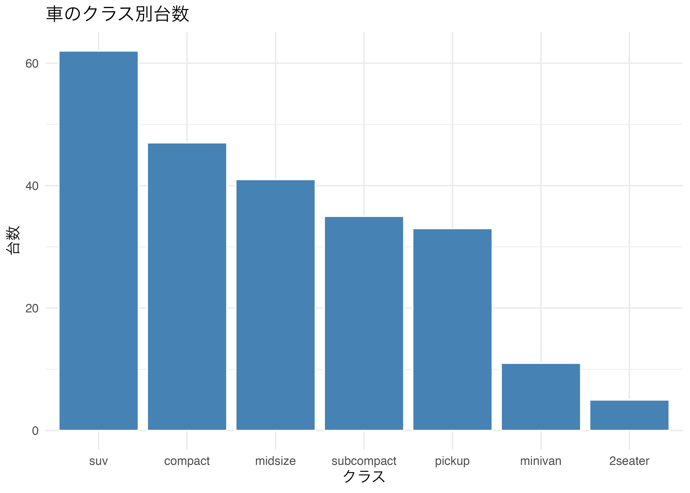
主なテーマ一覧
| テーマ | 特徴 |
|---|---|
theme_gray() |
デフォルト（グレー背景） |
theme_bw() |
白背景・黒枠 |
theme_minimal() |
ミニマル（格子線のみ） |
theme_classic() |
古典的（枠線のみ） |
theme_void() |
何もなし（地図など向け） |
3.5 演習問題（棒グラフ）
3.6 ヒストグラム
ヒストグラムは連続変数の分布を確認するための基本的なグラフです。
- データをビン（bin）と呼ばれる区間に分割する
- 各ビンに含まれるデータの個数（頻度）を棒の高さで示す
- 棒の間には隙間がない（← 棒グラフとの違い！）
`stat_bin()` using `bins = 30`. Pick better value `binwidth`.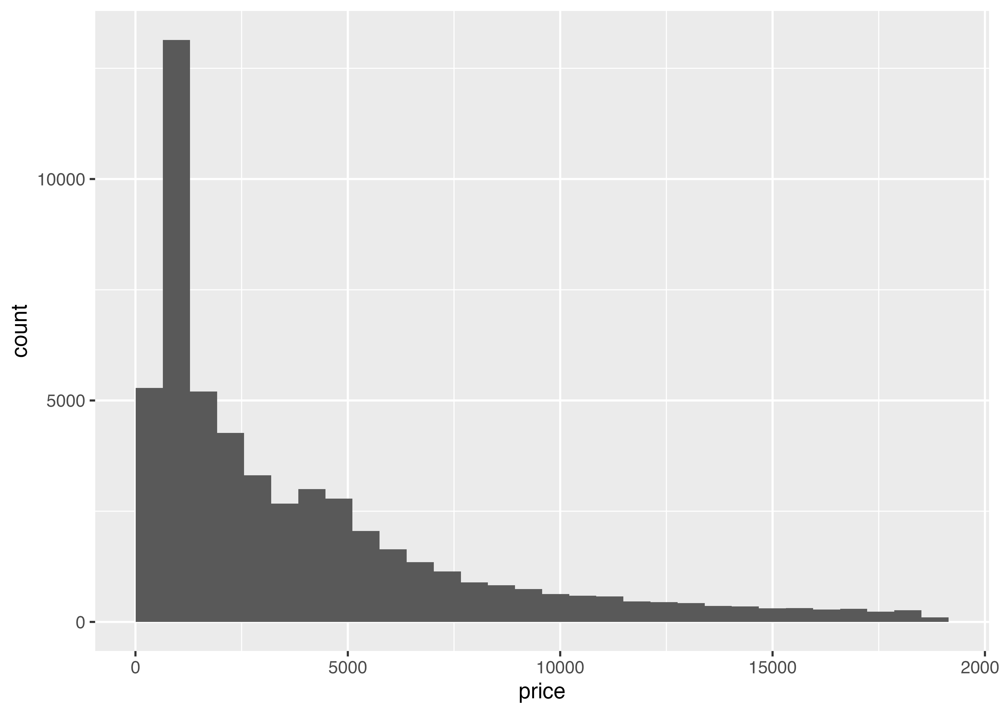
「stat_bin() using bins = 30」という警告について
ヒストグラムを描くと、上記のような警告メッセージが表示されます。 これは「ビン数（区間の数）がデフォルトの 30 になっています」という意味です。 警告というより「お知らせ」に近く、エラーではありません。 次のセクションでビン数を自分で設定する方法を学びます。
ビンの幅を調整する
ビンの幅（区間の広さ）の設定は、ヒストグラムで最も重要な調整です。
binwidth（ビンの幅を指定）
# 細かいビン（binwidth = 500 ドル）
ggplot(data = diamonds, aes(x = price)) +
geom_histogram(binwidth = 500) +
labs(title = "binwidth = 500", x = "価格（ドル）", y = "個数")
# 粗いビン（binwidth = 2000 ドル）
ggplot(data = diamonds, aes(x = price)) +
geom_histogram(binwidth = 2000) +
labs(title = "binwidth = 2000", x = "価格（ドル）", y = "個数")- 1
- 500 ドル刻みで区切る（細かい分布がわかる）
- 2
- 2000 ドル刻みで区切る（全体の形がわかる）
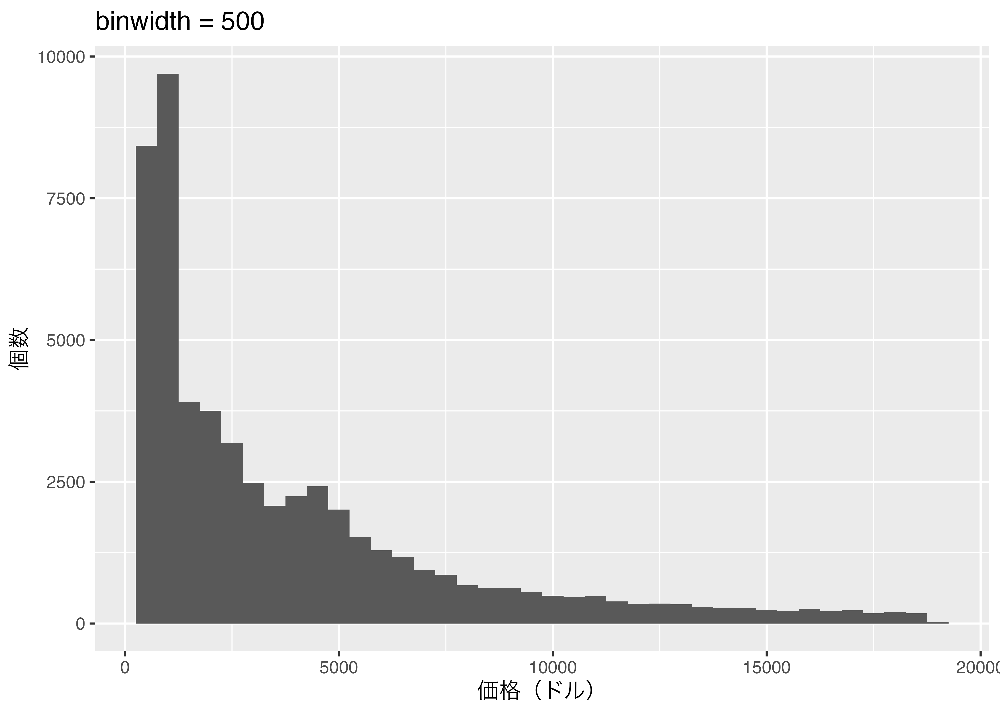
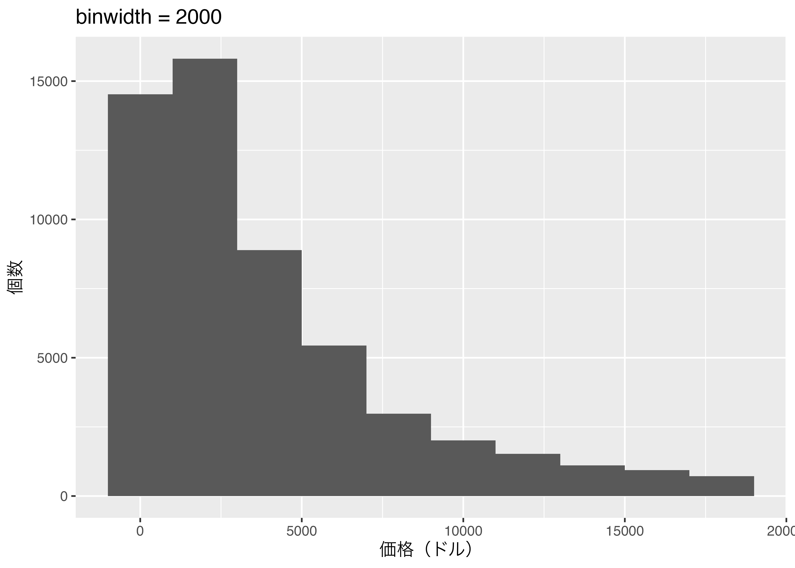
ビン幅の比較
bins vs binwidth
| 引数 | 意味 | いつ使う |
|---|---|---|
bins = 30 |
ビン数を指定（デフォルト値） | データの範囲を知らない場合 |
binwidth = 500 |
ビン幅を指定（単位はデータの単位） | 意味のある幅を設定したい場合 |
データの単位がわかる場合は binwidth のほうが直感的です。
色と見た目を整える
- 1
- 棒の塗りつぶし色
- 2
- 棒の輪郭色（白にすると境界がわかりやすい）
- 3
- 輪郭の太さ
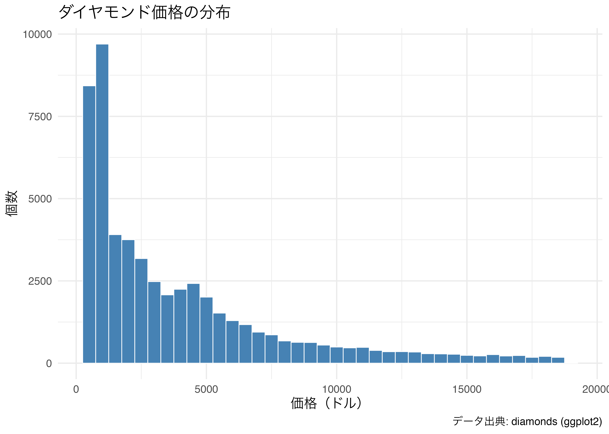
グループ別のヒストグラム
fill 変数で色分け（重ねて表示）
- 1
-
fill = cutでカット品質ごとに色分け - 2
-
alpha = 0.6で透過率 60%（重なりが見えやすくなる）
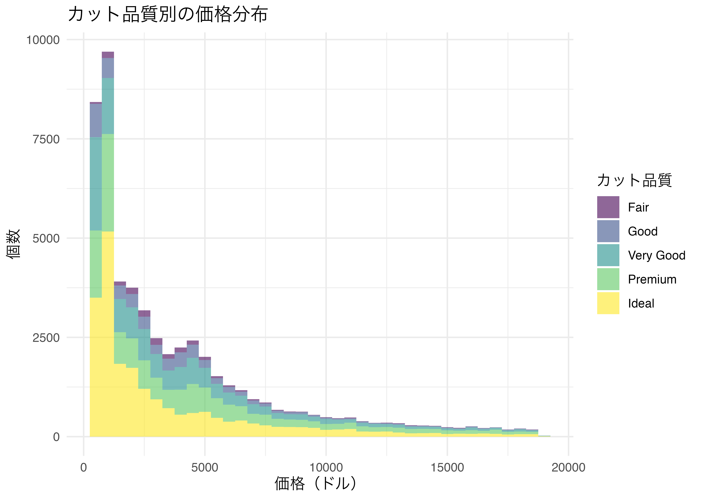
facet_wrap() で分割表示
重ねて表示すると見にくい場合は、分割（ファセット）表示が便利です。
- 1
-
facet_wrap(~ 変数)でパネルに分割。ncolで列数を指定
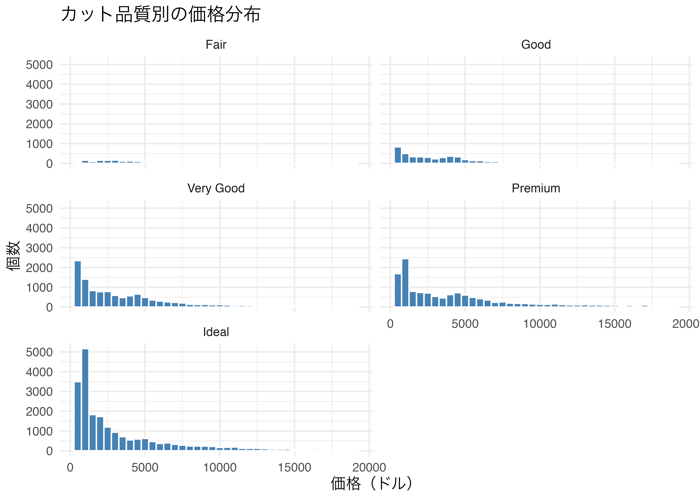
facet_wrap() の主な引数
| 引数 | 意味 |
|---|---|
~ 変数 |
どの変数で分割するか |
ncol = 2 |
列数 |
nrow = 3 |
行数 |
scales = "free_x" |
各パネルで X 軸の範囲を独立させる |
scales = "fixed"（デフォルト）は全パネルで軸の範囲を統一します。 比較したい場合は固定、分布の形だけ見たい場合は "free" が便利です。
軸の表示を整える
数値が大きい場合、X 軸のラベルが見にくくなります。
ggplot(data = diamonds, aes(x = price)) +
geom_histogram(binwidth = 500, fill = "steelblue", color = "white") +
scale_x_continuous(
labels = scales::dollar,
breaks = seq(0, 20000, by = 5000)
) +
labs(
title = "ダイヤモンド価格の分布",
x = "価格", y = "個数"
) +
theme_minimal() +
theme(axis.text.x = element_text(angle = 45, hjust = 1))- 1
-
scales::dollarでドル表記（コンマ区切り・$マーク）に変換 - 2
- X 軸の目盛りを 0〜20000 ドルの範囲で 5000 刻みに設定
- 3
- X 軸ラベルを 45 度に傾けて重ならないようにする
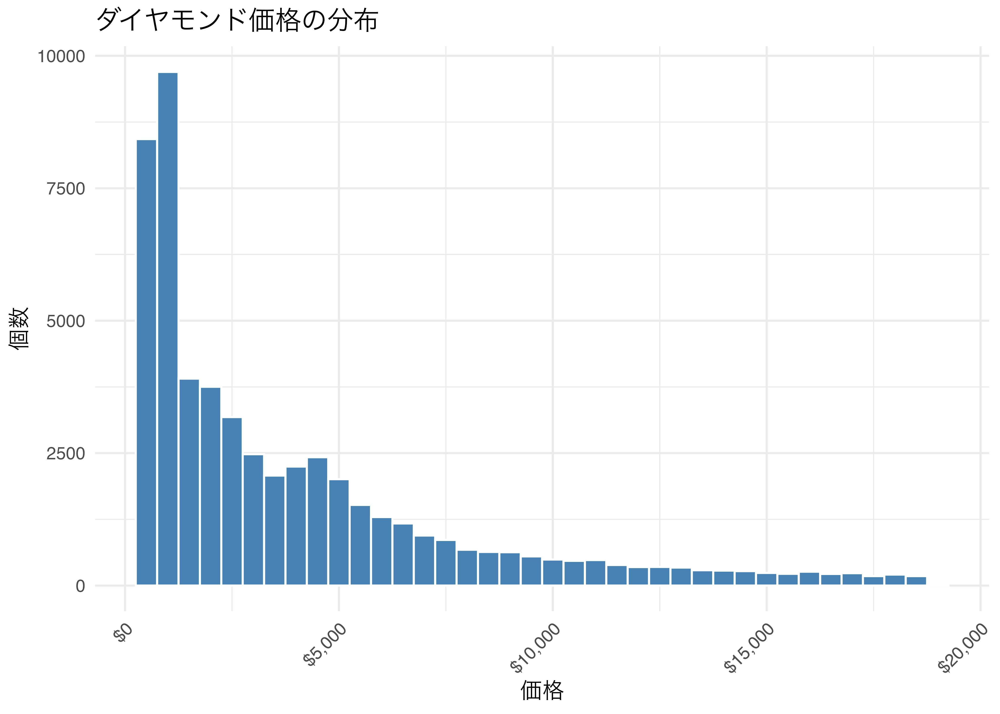
3.7 演習問題（ヒストグラム）
3.8 まとめ
本日学んだこと
ggplot2 の基本文法
棒グラフのまとめ
| やりたいこと | 書き方 |
|---|---|
| 個数を数える | geom_bar() |
| 値を直接指定 | geom_col() |
| 色を固定 | geom_bar(fill = "steelblue") |
| 変数で色分け | aes(fill = 変数名) |
| 頻度順に並べる | aes(x = fct_infreq(変数)) |
| 横向きにする | + coord_flip() |
| 並列に | geom_bar(position = "dodge") |
| 割合に | geom_bar(position = "fill") |
ヒストグラムのまとめ
| やりたいこと | 書き方 |
|---|---|
| 基本のヒストグラム | geom_histogram() |
| ビン幅を指定 | geom_histogram(binwidth = 500) |
| 色を変える | fill = "steelblue", color = "white" |
| 透過率 | alpha = 0.6 |
| 分割表示 | + facet_wrap(~ 変数) |
次回の予告
第 4 回では、さらに 3 種類のグラフを学習します。
- 箱ひげ図（
geom_boxplot()） - 散布図（
geom_point()） - 折れ線グラフ（
geom_line()）